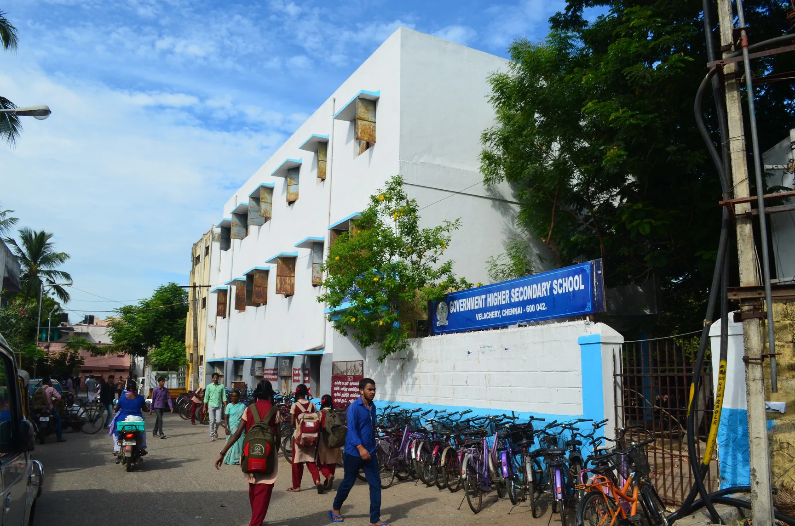

Hii, I'm
Kamalesh E
I am a highly motivated Software Developer with a deep-rooted passion for backend architecture and system design. My journey is defined by a relentless pursuit of engineering excellence and a commitment to building scalable, real-world solutions.
Currently, I am shaping my expertise in modern technologies, blending logic-driven engineering with creative problem-solving to bridge the gap between complex data and user-friendly applications.
 Diploma in CE
Diploma in CE

GHSSMy Educational Path
My academic foundation was laid at GHSS Velachery, where I completed my secondary education with a focus on core subjects. This early phase ignited my curiosity for how computers function and how systems are built.
I later transitioned to Central Polytechnic College to pursue a Diploma in Computer Engineering. I graduated with an outstanding score of 93% Overall, a testament to my dedication to mastering the complex logic and structural patterns of modern-day computing.